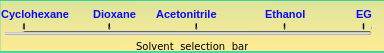
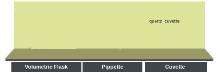

×
Manual
- Prepare five 1 × 10-5 M coumarin-138 solutions in solvents: cyclohexane, dioxane, acetonitrile, ethyl alcohol and ethylene glycol. Such dilute solutions can be prepared via dilution from 1 × 10-4 M stock solutions in respective solvents. Here solutions in different solvents are shown on a solvent selection bar.
- The absorption measurements with all the solutions are carried out one after another as follows.
- To take a particular solution, click on the appropriate solvent on the solvent selection bar and then click on the volumetric flask containing the solution.
- Click on the quartz cuvette (path length, 1 cm ×1 cm) to take it to the instrument table.
- Click on the glass Pasteur pipette to collect about 3 mL of the experimental solution which will be transferred into the quartz cuvette.
- Click on the pipette to draw the solution into it.
- Click on the pipette to take it out of the volumetric flask.
- Click on the pipette again to transfer the solution into the cuvette.To start the absorption spectral scan, click on the pop-up “Start Absorption Measurement”.
- Turn on the spectrophotometer clicking on the power button. In real operation, it takes approx. 30 min for initialization of the instrument.
- Open the lid of the sample chamber of the spectrophotometer by clicking on the lid for placing the sample in the cell-holder.Click on the cuvette to place it in the sample holder. One has to use pure solvent as the sample blank or reference in this measurement. Here a double beam spectrophotometer is shown.
- Close the lid of the sample chamber by clicking on it.
- Open the measurement set-up screen by clicking on the absorption measurement icon on the computer monitor.
- On the screen, enter the wavelength range. Start: 430 nm End: 275 nm. In real operation, the wavelength range of incident light for the sample is chosen and the wavelength scan is run via the accompanied computer software. One can run the scan in absorbance (A) or transmittance (%T) mode.
- Click on the green Start button on the measurement set-up screen to run the wavelength scan. Observe the wavelength scan.
- Click on Close button when spectral scan is complete. In real operation, the scan data are stored in the computer. The instrument stores data and therefore asks for the Sample File name. One enters a file name to save the data.
- To take the cuvette out of the sample chamber, first click on the sample chamber lid to open it and then on the cuvette.Click on the lid of the sample chamber to close it.
- Click on Reset button to start over the measurements.
- Repeat the Absorption measurements with all the solvents by clicking on the solvent selection bar first and then on the volumetric flask containing the solution.
- Collect all data by clicking on the Data tab.
- Examine UV-visible absorption spectra with different solvents.
- Find out the maximum absorption wavelengths and corresponding absorbance values for all the solvents and tabulate them along with the solvent dielectric constants and refractive indices values.
- Is there a relationship or trend between solvent polarity and the wavelength of maximum absorbance?
- Discuss your observations.


